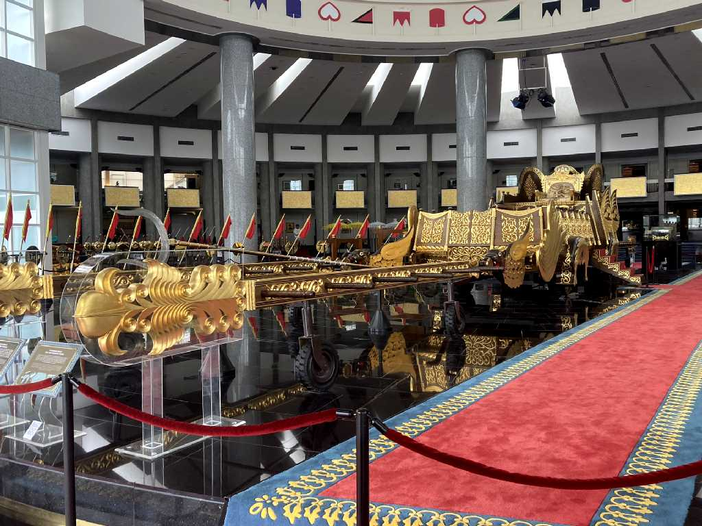
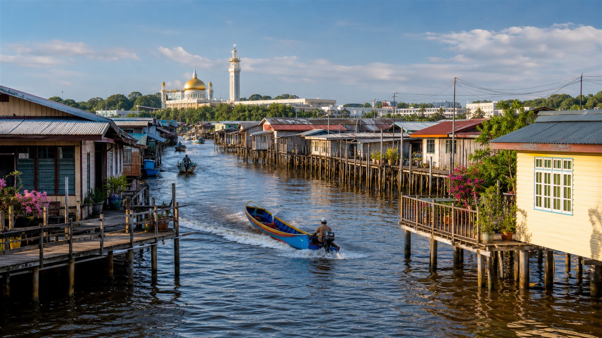

Ambuyat
A traditional Brunei dish made from sago starch, usually enjoyed with dipping sauces.
Try out our local food!
A traditional Brunei dish made from sago starch, usually enjoyed with dipping sauces.

A traditional sweet fried snack with a soft centre and crispy edges, shaped like a UFO.

A popular local favourite consisting of rice, fried chicken and spicy sambal.
Visit Brunei's memorable landmarks and find out the meaning behind every location.

Brunei's beautiful district filled with rainforests where activities such as jungle trekking can be enjoyed.
CLICK TO KNOW MOREKnown as the Green Jewel of Brunei, this national park offers visitors an opportunity to explore tropical rainforests, experience canopy walks and discover the country's natural biodiversity.

A collection of Brunei's royal heritage, packed with fruitful history.
CLICK TO KNOW MOREExplore Brunei's royal history through displays of royal ceremonial objects, gifts and the Sultan's coronation collection. It provides visitors with an insight into the country's monarchy and heritage.

The world's largest traditional stilt village.
CLICK TO KNOW MOREOften described as the Venice of the East, Kampong Ayer is a historic water village featuring traditional houses built on stilts. Visitors can explore the village using water taxis.

One of Brunei's most iconic architectural landmarks, featuring a magnificent golden dome.
CLICK TO KNOW MOREOne of Brunei's most recognisable landmarks, this magnificent mosque features a golden dome, Italian marble and a beautiful lagoon. It represents the country's Islamic heritage and architectural beauty.

A variety of joyful rides awaits at Brunei's popular amusement park.
CLICK TO KNOW MOREJerudong Park is a popular recreational destination in Brunei, offering amusement rides and entertainment for families, friends and visitors of different ages.
Experience Brunei's rich traditions and learn about the local customs to respect during your visit.
Visitors are encouraged to dress modestly, especially when visiting mosques and religious places. Shoulders and knees should be covered.
On Fridays, Brunei closed down shops and restaurants for a certain period of time for respect to those who pray at the mosque.
Ramadhan is respected with no dining in restaurants during the day and gather together for feast during sundown.